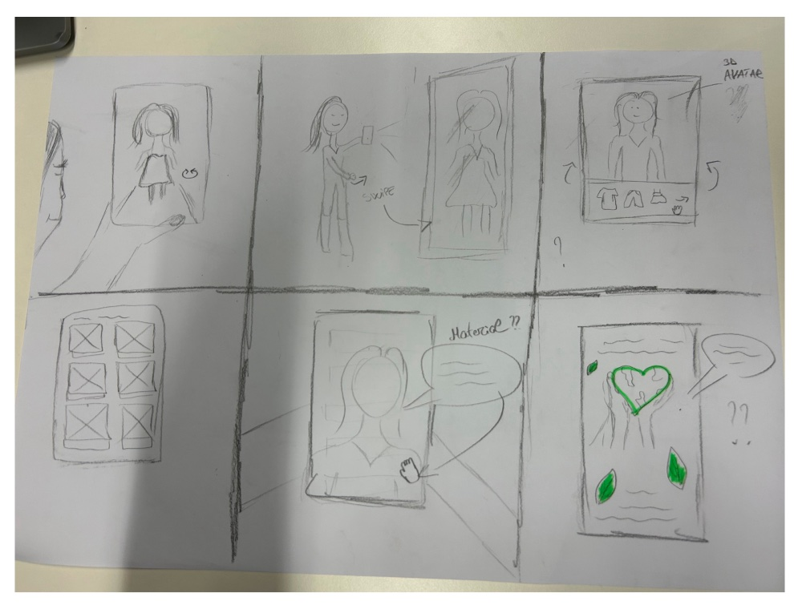
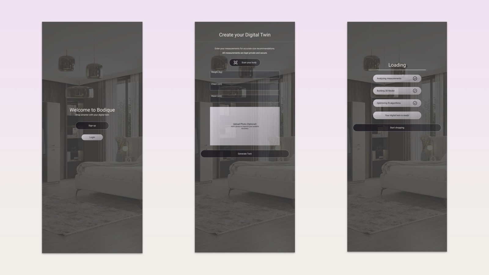
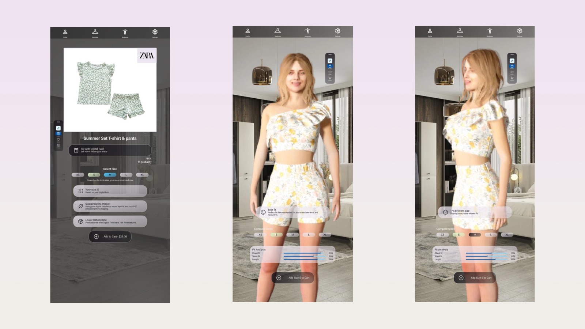
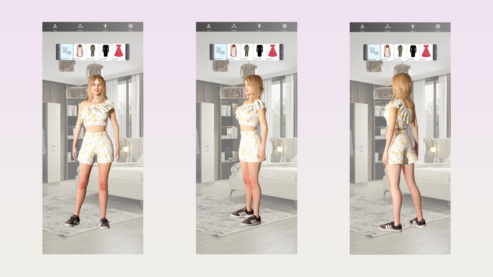
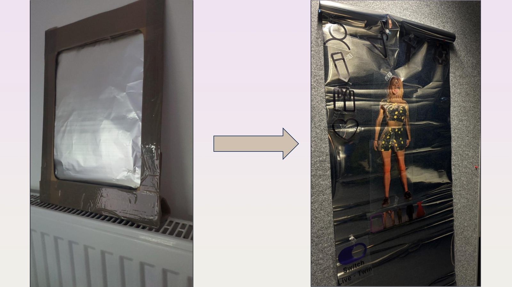
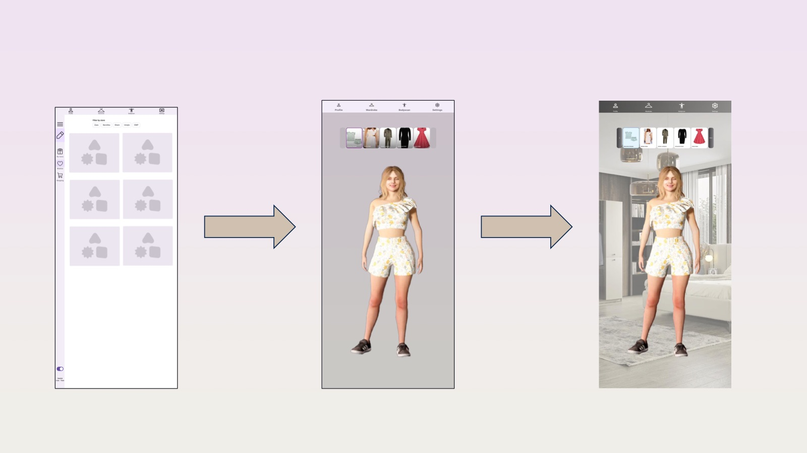
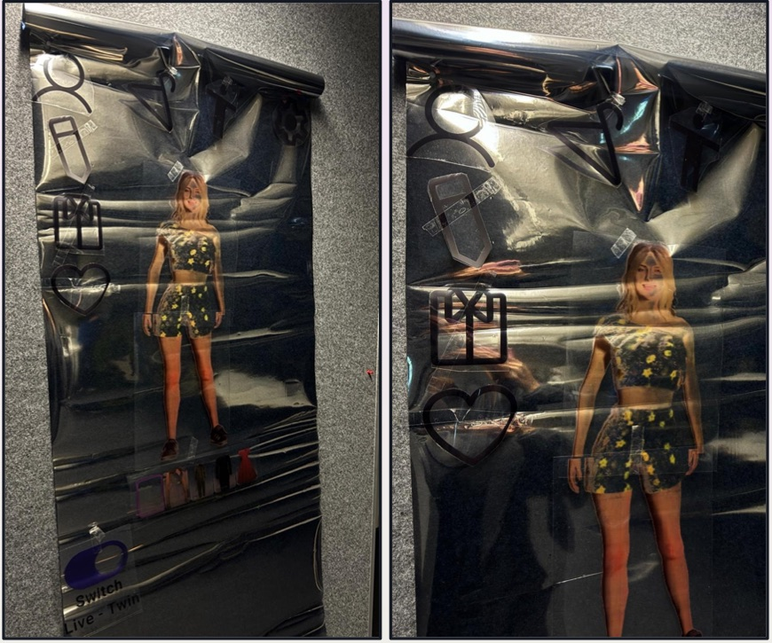

Testing a smart mirror concept for online fashion – one assumption at a time.
01 · Overview
Know what fits before you order
Online shoppers often order the same item in two or three sizes because they can’t tell what will fit. Bodique explores another way: a smart mirror at home that creates a personal digital twin and lets you try clothes on virtually before you buy.
The concept wasn’t the point of the course. The point was to treat every part of it as an assumption – and test it as early and cheaply as possible.
Over one semester, our team of five went from a broad topic to a tested concept: four rounds of user tests, and prototypes from a cardboard frame to a life-size mirror. All of us worked on every phase together.
02 · The challenge
Sizes that never mean the same thing
The same size fits differently from shop to shop. Shoppers can’t know what will fit, so they order several sizes and send most of them back. For them, that means uncertainty and an extra, frustrating step. For retailers, it means the cost of returns; for the environment, more transport and packaging.
We kept the shopper at the centre – the other two problems only shrink if the first one does.
How might we help people know what fits before they order – so they don’t need to buy several sizes to find one?
03 · Understanding the problem
From a broad topic to one clear problem
We started with a brainstorm and narrowed it down to two problem areas: accessibility and resource-conscious online shopping. We chose the second. Each of us then wrote a short “newspaper article” about the problem, and we merged them into one shared story.
We looked at the problem from four angles – the shopper, the retailer, the environment and society. Every time, the same core came back: people can’t judge size and fit online.
The Lean UX Canvas helped us connect that user problem with business goals.
Business problem
Returns cost money
Returns are expensive and hard to organise, there is no sizing standard across shops, and people find returns complicated to track.
Users
Short on time
Regular online shoppers, people who work late or live far from shops, body types that standard sizes fit poorly, parents.
Business outcomes
Fewer returns
Fewer items ordered per customer – one size instead of two or three.
User outcomes
Fits the first time
Clothes that fit the first time, a more personal shopping experience, comfort.
We filled in the canvas up to the hypotheses. What to learn first – and how – we answered through the test rounds.
04 · From assumptions to hypotheses
Writing down what we believed
We turned our ideas into statements we could prove wrong, using the format “We believe that [feature] for [persona] will lead to [outcome]”. A few examples:
Virtual try-on
Faster decisions
We believe that trying clothes on virtually leads to a faster, simpler shopping experience with fewer items ordered.
Stored body data
Comfort
We believe that storing body measurements makes shopping more comfortable – no measuring again.
Quick body scan
Low barrier
We believe that a fast, uncomplicated scan keeps the barrier to first use as low as possible.
Photo upload
Accessibility
We believe that uploading photos instead of scanning makes the concept accessible to people who can’t stand still in front of a mirror.
Deciding what not to test
Two hypotheses couldn’t be tested with a prototype, so we deliberately took them off the test plan instead of pretending a click dummy could answer them:
“Fewer parcels lead to a better environmental conscience.”
“24/7 support leads to a better UX.”
Reducing returns stays our business hypothesis – something only a real product could measure.
05 · Exploring the solution
Sketching together
In a collaborative design session, each of us sketched storyboards and screens on paper: standing in front of the mirror, scanning yourself, browsing and trying clothes on. We compared the sketches and combined the strongest ideas into one concept.
To keep the users in view, we worked with five proto-personas based on our own assumptions – such as “Shopping is a chore – I need efficiency” or “I hate the returns stress that eats my family time.” They weren’t validated by research, but they helped us decide which hypotheses mattered for whom.
Why a mirror?
A mirror is where people already check how clothes look. Putting the digital twin there keeps the decision in a familiar place instead of adding another app.


One of our storyboards: swiping through outfits on a 3D avatar in front of the mirror.
06 · Designing Bodique
A mirror that shows you in clothes you don’t own yet
The prototype covers the whole journey: create your twin from a few measurements or a scan, browse a store, your items or your wishlist, try an item on with a size suggestion and a fit overview, and turn the avatar to check it from every side.
Trust first.
Early tests showed that privacy and a realistic avatar decide whether people use a twin at all. The flow explains why each step is needed and shows the twin right after it is created.
One action per screen.
Most participants had little experience with smart devices, so each screen focuses on one main action.
Familiar gestures.
People stand close to a mirror and use their hands. We borrowed smartphone gestures, such as swiping through items, instead of inventing new ones.






The scan, the avatar and the fit analysis are simulated in the prototype – Bodique is a design concept, not a working system.
07 · Testing our assumptions
Four rounds, four questions
We tested with 5–10 people per round – flatmates, students, colleagues, parents and friends – and changed the prototype’s fidelity to fit each question.
Round 1
Is the idea worth pursuing?
Almost every recent order had included a return because of size or look. Fit mattered more than sustainability as a reason to buy, and privacy and a realistic display came up as conditions for using the concept at all.
Round 2
Can people use it, and do they trust it?
With wireframes and a first cardboard mirror, participants wanted to see themselves as an avatar and overlooked the mirror scan. They also suggested mirror-specific ideas: a navigation bar for left- and right-handed people, smartphone-like gestures, and a physical switch to turn it back into a normal mirror.
Round 3
Does it work at real size?
We printed the interface on mirror foil at full size. People recognised it as an interactive surface – but the amount of information felt overwhelming.


From a cardboard frame (round 2) to a life-size prototype on mirror foil (round 3).
Round 4
Who does it work for?
In the last round we observed four more people, aged 12 to 62. We recorded the time to their first interaction, how they interacted, and how overloaded the mirror felt on a scale from 1 to 10.
The results split sharply – along familiarity with technology, not age alone.
| Age | Tech affinity | First interaction | Overload | What we observed |
|---|---|---|---|---|
| 12–18 | 6 / 10 | 12 s | 1 / 10 | Found gesture control by chance and navigated fluently – but distrusted the body scan and raised the risk of body shaming. |
| 18–24 | 7 / 10 | 20 s | 5 / 10 | Found the gestures self-explanatory; confirming a choice was hard. Asked for a physical on/off button. |
| 48–60 | 3 / 10 | ~50 s | 8 / 10 | First tried to turn in front of the mirror; needed help to start navigating. Wanted fewer elements and clearer explanations. |
| 52–62 | 1 / 10 | 2 min | 5 / 10 | Shook the foil instead of touching it, needed help several times and saw no added value over classic online shopping. |
Round 4 observations. Tech affinity was self-rated.
What remains uncertain
Bodique worked well for confident, frequent online shoppers – and not yet for people unfamiliar with smart devices, the very group our hypotheses called “the barrier to first use”.
We didn’t test whether Bodique reduces returns or orders, whether people would trust a real body scan, or whether fit predictions would be accurate. A click prototype can’t answer those questions.
08 · Iterating the experience
What changed, and why
The twin became visible.
Observation: In round 2, an abstract “digital twin” was hard to imagine.
Change: we added a realistic avatar – first on a neutral background, then in a real room – so people can picture themselves in the clothes.
The scan moved forward.
Observation: The mirror scan was overlooked.
Change: the scan became an explicit, guided step in creating the twin.
From paper to real size.
Observation: A mirror can’t be judged at screen size.
Change: a life-size prototype on mirror foil for round 3.
Less on screen.
Observation: In round 3, the interface felt overloaded.
Change: we removed the fixed left sidebar in favour of a flexible, modular layout and cut the information per screen.
Still open after round 4.
A physical on/off switch, clearer onboarding for people new to smart devices, and a body scan that feels safe rather than judging.


Wireframe → avatar → avatar in a real room.


Round 3: the foil prototype before and after slimming the interface.
09 · Outcome & reflection
What I’m taking with me
We delivered a high-fidelity concept of a smart-mirror shopping experience, a concept video, physical prototypes and findings from four rounds of testing. The work shows that people understand and want the idea under clear conditions – privacy, realism and simplicity. It doesn’t show any effect on returns; that would need a real implementation and much broader testing.
Lean UX needs discipline.
The speed was energising, but it also tempted us to cut corners. Next time I’d set clear “done” criteria for each step of the canvas.
with the people behind the product?